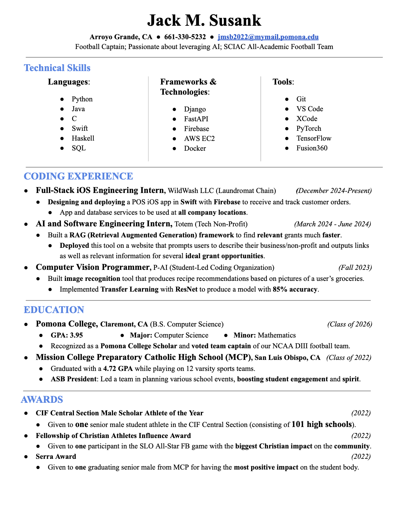

Hi, I’m Jack Susank and welcome to my website! I’m a 3rd year computer science student at Pomona College with a passion for problem-solving, AI, and technology. Recently, I’ve been looking into Natural Language Processing (NLP), 3D Rendering/Printing, Data Visualization, and App Building. When I’m not working, studying, or learning about these things, I enjoy hiking, cooking, playing football, and spending time with my friends and family.
Thanks for visiting my site! Feel free to check out my projects and get in touch!
For this project, I decided to analyze the dialogue from one of my favorite TV shows (The Office) to uncover some linguistic patterns across its characters and episodes. I explored topics like the frequency of “downsizing,” character verbosity, hesitation patterns, and punctuation quirks.
library(stringr)
library(dplyr)
library(tidyr)
library(ggplot2)Here is a random sample of our data
df <- read.csv("the-office_lines.csv", fileEncoding = "UTF-8")
df |>
sample_n(5) |>
knitr::kable()How Often Does “Downsizing” Come Up?
downsizing <- df |>
# Group the data by season and episode so we can count per episode
group_by(Season, Episode_Number) |>
# Keep only lines that contain the word "downsizing" (case-insensitive, as a whole word)
filter(str_detect(Line, regex("\\bdownsizing\\b", ignore_case = TRUE))) |>
mutate(count_of_downsizing_lines = n()) |>
mutate(SeasonEp = paste0("S:", Season, " E:", Episode_Number)) |>
select(SeasonEp, count_of_downsizing_lines) |>
distinct()
downsizingWhen I think of downsizing in The Office, I tend to think of the very first episode (10) so I am surprised to see that, in reality, the word appears in more lines (14) in the fourth episode.
Who Talks the Most in Episode 1?
# Identify the unique characters who speak in Season 1, Episode 1
Ep1Characters <- df |>
filter(Season == 1, Episode_Number == 1) |>
distinct(Character)
# Analyze average words per line for those characters across the entire dataset
AvgWordsSpoken <- df |>
# Keep only rows where the character appeared in Episode 1
semi_join(Ep1Characters, by = "Character") |>
group_by(Character) |>
group_by(Character) |>
mutate(Count = str_count(Line, "\\b\\w+\\b")) |>
# Count the total number of lines spoken by each character
mutate(NumLines = n()) |>
# Compute the average number of words per line per character
summarise(AvgCount = mean(Count), NumLines = NumLines) |>
arrange(desc(AvgCount)) |>
distinct()
AvgWordsSpoken
These results display that there is a fairly wide range of average sentence lengths. There also seems to be a correlation between speaking often and speaking a lot. In other words, characters that have a small number of lines also have a small number of words per line, and vice versa. There are, of course some exceptions to this rule, but it is particularly true for Michael Scott.
Which Character Has the Longest “Um”?
UmTracker <- df |>
group_by(Character) |>
# Extract any instance of "um", "umm", "ummmm", etc. as a whole word, case-insensitive
mutate(umInstances = str_extract(Line, regex("\\bum+\\b", ignore_case = TRUE))) |>
# Keep only lines where an "um" instance was actually found
filter(!is.na(umInstances)) |>
# Measure the length (number of characters) of the longest "um" in each line
mutate(umLength = nchar(umInstances)) |>
# Summarize by finding the longest "um" per character,
# and extract the full line where that longest "um" occurred
summarise(maxUmLength = max(umLength), maxUmLine = Line[which.max(umLength)], .groups = "drop") |>
select(Character, maxUmLength, maxUmLine) |>
arrange(desc(maxUmLength))
UmTracker
Pam has the longest um! In Season 2, Episode 9, she has a line in which all she says is “Ummmm…”. It makes sense for Pam’s character to have the longest ‘um’ considering how reserved she is. This reservedness reveals itself in the previous plot in that she has a relatively small average sentence length relative to the number of lines she speaks. In fact, of all of the characters that have more than 2,000 lines, she is the only one with an average length less than 10. Being unsure of herself, it makes sense that Pam would be the only character to have this long of a hesitation written into the script.
What Words Precede Punctuation Marks?
# Identify words that appear immediately before exclamation marks
WowWords <- df |>
mutate(instance = str_to_lower(str_extract(Line, "\\b\\w+(?=!)"))) |>
filter(!is.na(instance)) |>
group_by(instance) |>
summarize(count = n(), .groups = "drop") |>
arrange(desc(count))
# Identify words that appear immediately before question marks
QuestionWords <- df |>
mutate(instance = str_to_lower(str_extract(Line, "\\b\\w+(?=\\?)"))) |>
filter(!is.na(instance)) |>
group_by(instance) |>
summarize(count = n(), .groups = "drop") |>
arrange(desc(count))Plot 1:
```{r, fig.alt=“Horizontal bar chart showing the top 10 most frequent words immediately before an exclamation mark. ‘no’ is the most frequent, followed by ‘it’, ‘oh’, and others.”, echo=FALSE, warning=FALSE, message=FALSE} TenWowWords <- WowWords |> head(10)
ggplot(TenWowWords, aes(x = instance, y = count)) + geom_bar(stat = “identity”, fill = “dodgerblue”) + coord_flip() + labs(title = “10 Most Frequent Words Before ‘!’”, x = “Words”, y = “Count”) + theme_minimal()
This plot displays the 10 words that most often appear immediately before an exclamation mark. My favorite aspect of this plot is that for most of the words, you can imagine who said them and how. For example, just as the viewer may have guessed, Dwight said 'Michael!' 29 times over the course of the show, more than twice as much as any other character. Similarly, Michael ended his sentences with 'no!' and 'god!' much more often than any other character. It is also important to point out that these words differ notably from the list of 10 most used words in general.
**Plot 2:**
```{r, fig.alt="Horizontal bar chart showing the most frequent words immediately before a question mark. 'what' is the most common, followed by 'right', 'you', and others.", echo=FALSE, warning=FALSE, message=FALSE}
TenQuestionWords <- QuestionWords |>
head(10)
ggplot(TenQuestionWords, aes(x = instance, y = count)) +
geom_bar(stat = "identity", fill = "dodgerblue") +
coord_flip() +
labs(title = "10 Most Frequent Words Before '?'", x = "Words", y = "Count") +
theme_minimal()This plot displays the 10 words that most often appear immediately before a question mark. Unlike the previous plot, it is difficult to imagine who typically said each word and how. However, it is still quite interesting, though not necessarily surprisingly, that there is one word, “what”, that precedes a question mark significantly more often than any other. It is also important to note that these words differ significantly from the list of 10 most used words in general.
Plot 3:
```{r wow-vs-question-scatter, fig.alt=“Scatter plot showing words like ‘what’, ‘no’, and ‘hey’ positioned by their relative frequencies before exclamation marks and question marks. Words vary in use, with some heavily favoring one punctuation mark.”, echo=FALSE, warning=FALSE, message=FALSE}
Extract and count words that appear immediately before an exclamation mark
WowWords <- df |> mutate(instance = str_to_lower(str_extract(Line, “\b\w+(?=!)”))) |> filter(!is.na(instance)) |> group_by(instance) |> summarize(count_wow = n(), .groups = “drop”)
Extract and count words that appear immediately before a question mark
QuestionWords <- df |> mutate(instance = str_to_lower(str_extract(Line, “\b\w+(?=\?)”))) |> filter(!is.na(instance)) |> group_by(instance) |> summarize(count_question = n(), .groups = “drop”)
Join both datasets by the word instance, and calculate proportions
commonWords <- full_join(WowWords, QuestionWords, by = “instance”) |> mutate( # Replace missing values with 0s (some words only appear in one list) count_wow = ifelse(is.na(count_wow), 0, count_wow),
count_question = ifelse(is.na(count_question), 0, count_question), total_wow = sum(count_wow),
total_question = sum(count_question),
# Compute proportions for each word prop_wow = count_wow / total_wow,
prop_question = count_question / total_question
) |> # Sort by combined frequency and keep only top 10 words arrange(desc(prop_wow + prop_question)) |> head(10)
ggplot(commonWords, aes(x = prop_wow, y = prop_question, label = instance)) + geom_point(stat = “identity”, color = “#1f77b4”, size = 3) + geom_text(vjust = -0.25, hjust = -0.5, size = 4, color = “black”) + labs( title = “Relative Frequency of Words Before ‘?’ and ‘!’”, subtitle = “Top 10 most frequent words”, x = “Proportion Before ‘!’”, y = “Proportion Before ‘?’” ) + theme_minimal(base_size = 15) + theme( legend.position = “none”, axis.title = element_text(size = 14), axis.text = element_text(size = 12), plot.title = element_text(size = 18, face = “bold”), plot.subtitle = element_text(size = 14, face = “italic”) )
This graph plots the relative frequencies of the 10 most common words used before exclamation marks and question marks. Some words, such as 'you' and 'it' precede each sign with similar frequencies. Most others, including 'what', 'no', 'oh', 'hey', and 'yes' differ significantly in their proportions. Among these, 'what' is the biggest outlier because it precedes nearly 1% of all question marks in the show! No other word appears before either of the signs with even half that frequency.
**Data Source**
The dataset used in this analysis is "The Office Lines" dataset on [Kaggle](https://www.kaggle.com/datasets/fabriziocominetti/the-office-lines/data). This dataset was currated by scraping text from [The Office Quotes](https://www.officequotes.net/). It contains transcripts from all episodes of The Office (U.S.), including character dialogue, season, and episode numbers for every line.
---
title: "Apple Interview Question!"
description: |
Exploring a blindfolded coin sorting riddle through simulation and probability.
author: Jack Susank
date: April 2, 2025
format: html
execute:
warning: false
message: false
---
**Inspiration**
I once heard of a Apple interview question in which the candidate is given 100 coins (90 with heads facing up and 10 with tails facing up) and then asked to separate them into two piles of any size such that each pile has the same number of coins with the tails side facing up. Sounds simple enough, but there's a catch... the candidate was to be blindfolded the entire time. This means they never saw the coins and have no idea which 10 coins are on tails or which 90 coins are on heads.
There is an algorithmic approach to this problem such that you can guarantee your answer will be true, but I was not able to come up with it. The best I could think to do is to randomly perform 100 coin flips and then separate my flipped coins into two piles of 50. I would then just have to hope that each pile has the same number of tails facing up.
**Motivating Question**
Although my answer is not exactly what the interviewers would have in mind, I have always been curious as to how often my answer would end up being correct merely by chance. Until now, I haven't been able to figure out a way to answer this question without doing long mathematical calculations, and the free version of ChatGPT seems to give me a different answer each time I ask it, so I'm very excited to finally approximate the answer using this simulation.
**Results**
```{r simulate-piles, echo=TRUE, warning=FALSE, message=FALSE}
# Simulate flipping two piles of coins and checking if the number of tails match
library(purrr)
coin_flip <- c(0, 1)
# Function to simulate flipping two piles and checking if they match in tails
flip_coins <- function(pile_size) {
left_pile <- sample(coin_flip, size = pile_size, replace = TRUE)
right_pile <- sample(coin_flip, size = pile_size, replace = TRUE)
tails_match <- ifelse(sum(left_pile) == sum(right_pile), 1, 0)
return (tails_match)
}
# Run the simulation many times and return the estimated probability
coin_simulation <- function(pile_size, num_iterations) {
results <- map_dbl(c(1:num_iterations), ~flip_coins(pile_size = pile_size))
probability_same_tails <- mean(results)
return(probability_same_tails)
}
coin_simulation(50, 100000)According to the simulation, I could expect to get the right answer about 8% of the time!
While the results were lower than I had expected, the simulation provides a clear and consistent estimate. Out of curiosity, I have also simulated how the results would change with varying pile sizes. A plot with the results of that simulation can be seen below.
```{r pile-size-plot, fig.cap=“Probability of matching tails as a function of pile size”, fig.alt=“A line plot showing that smaller pile sizes have a higher probability of matching tail counts between two piles.”, echo=FALSE, message=FALSE, warning=FALSE} library(ggplot2)
pile_size <- (1:100)
results_100 <- map_dbl(pile_size, coin_simulation, num_iterations = 5000) results_df <- data.frame(pile_size = pile_size, probability = results_100)
ggplot(results_df, aes(x = pile_size, y = probability)) + geom_line(color = “blue”) + geom_point(color = “red”) + labs( title = “Probability of Equal Tails in Two Piles”, x = “Pile Size”, y = “Probability” ) + theme_minimal()
**Insights**
This plot depicts the relationship between the number of coins in each pile, and the probability that the flips will result in the same number of tails. As you can see, if you wanted to maximize your odds of success, the smartest thing to do would be to minimize the pile size. It should be noted, however, that although the probability that you get the exact same number of heads in each pile decreases as the pile size increases, the probability that you get a similar number would increase. Essentially, what is happening here is the number of total possible outcomes is increasing with the number of coins in each pile so the outcomes are more granular, and therefore, more likely to be unequal. In the interview question I heard about, the pile size was 50, and we can see in the graph that this corresponds to a probability score of about 0.8 (the same as before).
I think these results have applications outside of a random Apple interview question like this one because they speak to the best way to maximize repeated success in a probabilistic setting. These results speak to the fact that reducing the number of potential outcomes reduces the probability of getting different outcomes. In this case, you can't reduce the number of outcomes by changing the number of sides on a coin, but you can reduce the number of outcomes by reducing the number of times you perform the experiment. This is also true in general. Imagine if you were to perform the same simulation except with 100 six-sided-dice instead of 100 two-sided coins. The results would follow the same pattern.
---
title: "Data Ethics"
description: |
The Ethics of Mosaicked Deidentification
author: Jack Susank
date: April 15, 2025
format: html
execute:
warning: false
message: false
---
There exists a growing problem in the field of data science which pertains to how data is sourced. Oftentimes, the most useful data is about us, but there are a whole host of problems that could arise when data can be linked to the person it describes. Medical data for example, can contain very personal details about a person's life. In the wrong hands, these details that should be private could be used to profit off of the individual (potentially at that individual's expense). The process of eliminating the possibility of data being reconnected with the person it describes, is called de-identification, and it may seem that merely removing names from a dataset is enough to guarantee this, but it turns out that there are several other details that could be used as identifiers. "The HIPAA Privacy Rule designates 18" of them (Nashville Biosciences), but even removing all 18 can still leave people vulnerable. This is because other quasi-identifiers can be used in conjunction with one another to piece together a person's (or community's) identity. The "concept of combing datasets to fill in the blanks is known as 'mosaicking'" (Leetaru) and as an example, we can look at the famous New York City taxi database and the research performed by grad student Anthony Tockar. When the taxi dataset was released in 2013, it was improperly 'anonymized' by performing a mathematical operation (called MD5 hashing) on the license and medallion numbers of each cab driver. This process would have sufficiently scrambled all of the relevant identifiers if the size of the input space wasn't so small. Unfortunately, it was, and people like Tockar (Leetaru) and Vijay Pandurangan (Goodin) were able to reverse engineer the original values because the researchers also failed to use techniques like keying or salting. Keying adds a secret to the hash to block unauthorized reproduction, while salting inserts random data so repeated values generate different hashes. By combining dataset insights with the vast numbers of pictures of celebrities in cabs published by the paparazzi everyday, the researchers were then able to match the pictures with the corresponding datatable entry. The cabs, their license plate, and medallion numbers are clearly depicted in many of these poparazzi pictures and other contextual data (like time and location) is typically available as well. By combining all of this data from the popparazzi pictures with the data from the cabs dataset, Tockar was easily able to identify the celebrities, their destinations, as even how much they paid and tipped for each ride. Examples like this reveal how difficult it can be to de-identify data, but luckily other solutions exist. Data managers are able to perform a variety of data manipulation techniques including clustering data into groups, providing row averages instead of individual values, and even producing 'synthetic data' that randomizes the data while maintaining the same distribution within each dimension and capturing inter-dimensional correlations. There are several approaches that allow researchers to draw meaningful conclusions while maintaining a strict de-identification status.
## New York City Taxi Dataset- More Ethical Considerations ##
The New York City Taxi Dataset was made available to the public by New York City officials in 2013 and it contained detailed information about over 173 million taxi rides (Goodin). The observational units were cab rides and each one included information on trip routes, trip times, and 'anonymized' identifiers for drivers and their vehicles. The entire 20GB dataset was downloadable by anyone and despite the intentions of the researchers, the data was re-identifiable. Each of the table entries can be successfully de-anonymized because although the dataset managers used one-way MD5 hashes on the medallion and license numbers. The structure of those numbers was relatively restricted and therefore susceptible to cryptographic de-anonymization given some time (Goodin). This small input space made it trivial for someone like software developer Vijay Pandurangan to generate all possible hashes and match them against the released dataset. Consequently, anonymity was not guaranteed in any sense. The poor choice of MD5 hashing without keying or salting raises significant ethical concerns and rendered the data highly vulnerable to re-identification. Because the release of the dataset enabled the public to track specific drivers' behaviors, work habits, and potentially even home locations, its release constitutes a serious breach of privacy. What's more is that, being released in 2013, it is not old enough to garner exemptions for these kind of mistakes (Leetaru).
While the original intent behind releasing the dataset may have been to support transparency within the government and promote research or innovation around public transportation, poor anonymization opened the door for other intentions. Not only were the cab drivers travel and earnings patterns exposed, but if you ever had a way of knowing the plate number/medallion and the time and location of specific person's cab ride, then you also had access to information like their destination and how much they tipped (Leetaru)! Surely, this was not the intention of the city officials, but regardless, it is on them to eliminate any possibility of things like this from happening. This specific repurposing of the data extended far beyond the intended use and exposes how data, even when altered or partially scrubbed to the extent that it seems unidentifiable, can still be misused (Nashville Biosciences).
We must recognize that a move towards transparency within the government is positive, but in this case, the positive aspects of attempting to support transparency was outweighed by the negative potential of de-identification. The ethical concerns generated by the flawed anonymization method overshadow any possible benefits that the data might have offered. Instead of boosting transparency and promoting public transportation (such as by fostering efficiency gains) within communities, the release exposed drivers to potential scrutiny, surveillance, and exploitation, which undoubtedly could do more harm than good (Goodin).
## Works Cited
“De-Identification: Balancing Privacy and Utility in Healthcare Data.” *Nashville Biosciences*, 24 Jan. 2025, [nashbio.com/blog/healthcare-data/de-identification-balancing-privacy-and-utility-in-healthcare-data/](https://nashbio.com/blog/healthcare-data/de-identification-balancing-privacy-and-utility-in-healthcare-data/).
Goodin, Dan. “Poorly Anonymized Logs Reveal NYC Cab Drivers’ Detailed Whereabouts.” *Ars Technica*, 23 June 2014, [https://arstechnica.com/tech-policy/2014/06/poorly-anonymized-logs-reveal-nyc-cab-drivers-detailed-whereabouts/](https://arstechnica.com/tech-policy/2014/06/poorly-anonymized-logs-reveal-nyc-cab-drivers-detailed-whereabouts/).
Leetaru, Kalev. “The Big Data Era of Mosaicked Deidentification: Can We Anonymize Data Anymore?” *Forbes*, 24 Aug. 2016, [https://www.forbes.com/sites/kalevleetaru/2016/08/24/the-big-data-era-of-mosaicked-deidentification-can-we-anonymize-data-anymore/](https://www.forbes.com/sites/kalevleetaru/2016/08/24/the-big-data-era-of-mosaicked-deidentification-can-we-anonymize-data-anymore/).
---
title: "Water Insecurity"
description: |
Analysis of Water Insecurity data from TidyTuesday
author: Jack Susank
date: February 15, 2025
format: html
echo: FALSE
execute:
warning: false
message: false
---
This is an analysis of Water Insecurity data sourced from TidyTuesday's January 28th, 2025 data release. The plot depicts the water insecurity of US Counties in 2022. To download the data, visit [this github repo](https://github.com/rfordatascience/tidytuesday/blob/main/data/2025/2025-01-28/readme.md).
This dataset was compiled by [Niha Pereira](https://github.com/nnpereira) using the [tidycensus](https://CRAN.R-project.org/package=tidycensus) package for R and [this blog walkthrough](https://waterdata.usgs.gov/blog/acs-maps/). For more information on how to access census data from sources such as the U.S. Census Bureau, the Decennial Census, the American Community Survey (ACS), and the Household Pulse Survey, see the walkthrough.
```{r setup-pat, include=FALSE}
readRenviron("~/.Renviron")library(ggplot2)
water_insecurity_2022 <- readr::read_csv('https://raw.githubusercontent.com/rfordatascience/tidytuesday/main/data/2025/2025-01-28/water_insecurity_2022.csv')
water_insecurity_2022 <- na.omit(water_insecurity_2022)
```{r, fig.alt=“This is a scatterplot of county population vs. percent lacking plumbing. The vast majority of points have a low population (less than 2.5 million people) and a low percent lacking plumbing (less than 1%). There are also some outliers with high population (max of 10,000,000 people), and some with high percent lacking plumbing (max of 3.7%), but there are no counties with a high population and a high percent lacking plumbing.”} ggplot(water_insecurity_2022, aes(x = total_pop, y = percent_lacking_plumbing)) + # Add blue semi-transparent points for each county geom_point(color = “blue”, size = 2, alpha = 0.5) +
labs( title = “Water Insecurity in US Counties”, x = “Total Population”, y = “Percent Lacking Plumbing” ) + theme_minimal(base_size = 14) + theme( plot.title = element_text(hjust = 0.5, face = “bold”), axis.title = element_text(face = “bold”), axis.text = element_text(color = “gray20”), panel.grid.major = element_line(color = “gray85”), panel.grid.minor = element_blank() ) +
# Format x-axis labels with commas scale_x_continuous(labels = scales::comma)
This plot shows that the vast majority of counties have a low population (less than 2.5 million people) and a low percent lacking plumbing (less than 1%). There are also some outliers with high population (max of 10,000,000 people), and some with high percent lacking plumbing (max of 3.7%), but there are no counties with a high population and a high percent lacking plumbing. In other words, there a no major cities in the dataset with a large percentage of their inhabitants lacking plumbing, but there are several (5) cities who have more than 1% of their inhabitants lacking plumbing.
---
title: "Cheese!"
description: |
Analysis of Cheese data from TidyTuesday
author: Jack Susank
date: February 15, 2025
format: html
echo: FALSE
execute:
warning: false
message: false
---
This is an analysis of Cheese data sourced from TidyTuesday's June 4th, 2024 data release. The plot compares the fat and calcium contents different types of cheese. To download the data, visit [this github repo](https://github.com/rfordatascience/tidytuesday/blob/main/data/2024/2024-06-04/readme.md).
This dataset was compiled using data from [Cheese.com](https://www.cheese.com/) and its creation was inspired by the [polite package](https://dmi3kno.github.io/polite/).
```{r setup-pat, include=FALSE}
readRenviron("~/.Renviron")cheeses <- readr::read_csv('https://raw.githubusercontent.com/rfordatascience/tidytuesday/main/data/2024/2024-06-04/cheeses.csv')library(ggplot2)
library(stringr)
library(dplyr)
cleaned_cheeses <- cheeses |>
select(fat_content, calcium_content, cheese) |>
mutate(calcium_content = as.integer(str_replace(calcium_content, " mg/100g", ""))) |>
mutate(fat_content = as.integer(str_replace(fat_content, "%", ""))) |>
filter(!is.na(fat_content) & !is.na(calcium_content) & !is.na(cheese))```{r, fig.alt=“Scatterplot showing fat content versus calcium content for various cheeses, with each cheese type represented by a different color and a blue linear trend line indicating an overall weak negative relationship. Cheeses listed include Limburger, Petida, Anthotyro, and Provoleta.”}
Scatterplot of fat content vs. calcium content for various cheeses
ggplot(cleaned_cheeses, aes(x = fat_content, y = calcium_content, color = cheese)) + # Plot individual cheese data points, colored by cheese type geom_point() +
# Add a linear trend line (without a confidence interval) geom_smooth(method = “lm”, se = FALSE, color = “blue”) + labs( title = “Fat versus Calcium content of Various Cheeses”, x = “Fat Content (%)”, y = “Calcium Content (mg/100g)” ) + theme_minimal() + theme( plot.title = element_text(hjust = 0.5, face = “bold”), axis.title = element_text(face = “bold”), axis.text = element_text(color = “gray20”), panel.grid.major = element_line(color = “gray85”), panel.grid.minor = element_blank() ) ```
This plot visualizes the relationship between fat and calcium content across various types of cheese. Each point represents a specific cheese, and a linear trend line suggests a weak negative correlation.
